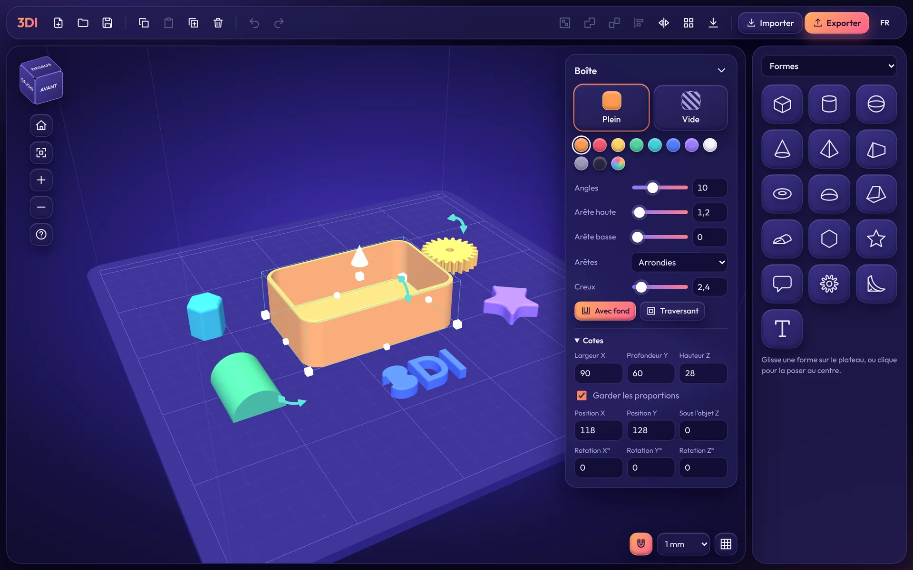
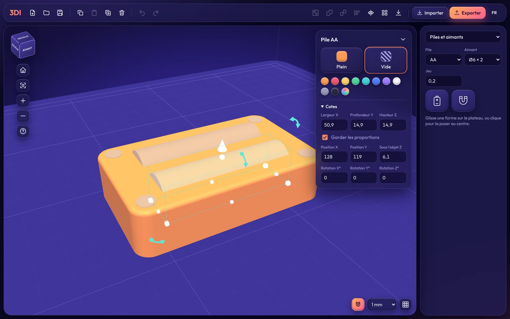
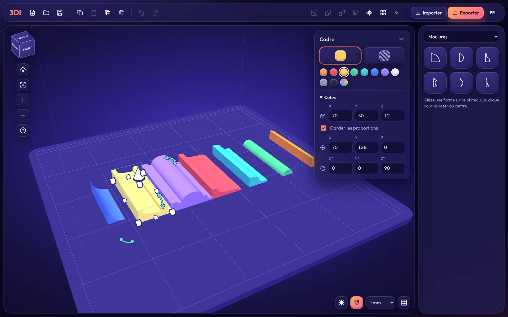

La modélisation 3D simple, pensée pour l'impression 3D
3DInfinite est un logiciel de construction 3D par assemblage de formes. On pose des volumes, on en creuse d'autres, on arrondit les arêtes, et on exporte un fichier STL ou 3MF prêt pour le slicer.

Ce que c'est
Un outil de construction 3D orienté impression
3DInfinite n'est pas un logiciel d'animation ni une CAO d'ingénieur. C'est un atelier pour dessiner vite des pièces utiles : un boîtier, un support, un adaptateur, un cadre, une pièce de rechange. Tout y est exprimé en millimètres réels, sur le plateau de ton imprimante.
Assemble
Glisse des formes sur le plateau : boîte, cylindre, polygone, étoile, texte, engrenage, moulure.
Creuse
Passe une forme en « vide » : une fois fusionnée, elle retire de la matière. Trous de vis, logements, fenêtres.
Arrondis
Règle les angles et les arêtes au curseur, en arrondi ou en chanfrein, comme dans un outil de design.
Exporte
STL ou 3MF, une pièce par couleur. Ouvre le fichier dans ton slicer et imprime.
Fonctions
Ce que fait 3DInfinite
Formes pleines et vides
Chaque forme ajoute ou retire de la matière. Les groupes gardent les objets modifiables, la fusion en fait un seul volume.
Arrondis précis
Rayon des angles, arête haute, arête basse, chanfreins. Parois creuses avec fond ou traversantes, à l'épaisseur voulue.
Texte et SVG
Texte en relief avec les polices de l'ordinateur. Import d'un dessin SVG pour l'extruder.
Visserie prête à l'emploi
Trous de passage, têtes fraisées, écrous et inserts de M2 à M8, avec un jeu réglable.
Piles et aimants
Logements aux cotes standard : AA, AAA, 18650, CR2032, 9V, aimants de Ø3 à Ø20.
Engrenages
Denture en développante : nombre de dents, module, alésage et jeu. Deux roues de même module engrènent.
Moulures
Quart-de-rond, doucine, corniche, profil de cadre : des baguettes à couper pour habiller une pièce.
Répétition et symétrie
Copies en ligne, en cercle, symétries ×4 et ×8, alignement et magnétisme entre objets.
Le plateau de ton imprimante
Elegoo Centauri Carbon, Bambu Lab, Prusa, Creality, ou dimensions personnalisées.
De vrais fichiers
Les projets sont des fichiers
.3disur ton disque. Pas de compte, pas de cloud, rien n'est envoyé.
Captures
À quoi ça ressemble


Téléchargement
Installer 3DInfinite
Dernière version officielle, gratuite.
Nouveautés
Premier lancement : le système affiche un avertissement
3DInfinite n'est pas encore signé auprès de Microsoft et d'Apple. Le système demande donc une confirmation, une seule fois.
- Windows : dans la fenêtre « Windows a protégé votre ordinateur », clique sur Informations complémentaires, puis Exécuter quand même.
- macOS : glisse 3DInfinite dans Applications, lance-le, puis ouvre Réglages Système → Confidentialité et sécurité et clique sur Ouvrir quand même.
Déjà installé ? L'appli te prévient quand une nouvelle version sort. Toutes les versions sont sur la page des versions.
Questions fréquentes
Bon à savoir
3DInfinite est-il gratuit ?
Oui. Il se télécharge gratuitement, sans compte et sans abonnement.
À quoi sert 3DInfinite ?
À dessiner des pièces à imprimer en 3D : boîtiers, supports, adaptateurs, cadres, pièces de rechange. On assemble des formes simples, on en retire d'autres, puis on exporte un fichier STL ou 3MF pour le slicer.
Quels formats de fichier sont pris en charge ?
Import : STL et SVG. Export : STL et 3MF (une pièce par couleur). Les projets sont enregistrés en fichiers .3di sur l'ordinateur.
Avec quelles imprimantes 3D fonctionne-t-il ?
Toutes : 3DInfinite produit des fichiers STL et 3MF que n'importe quel slicer sait lire. Des plateaux sont préréglés pour Elegoo Centauri Carbon, Bambu Lab A1, A1 mini, P1 et X1, Prusa MK4 et MINI+, Creality Ender-3 V3 et K1, et un plateau personnalisé est possible.
Faut-il une connexion internet ?
Non. Le logiciel fonctionne hors ligne et les fichiers restent sur l'ordinateur. La connexion sert seulement à vérifier si une mise à jour existe.
Est-ce un logiciel de CAO paramétrique ?
Non. 3DInfinite est un modeleur par assemblage de formes, volontairement simple. Il ne remplace pas un logiciel de CAO avec esquisses contraintes et historique.